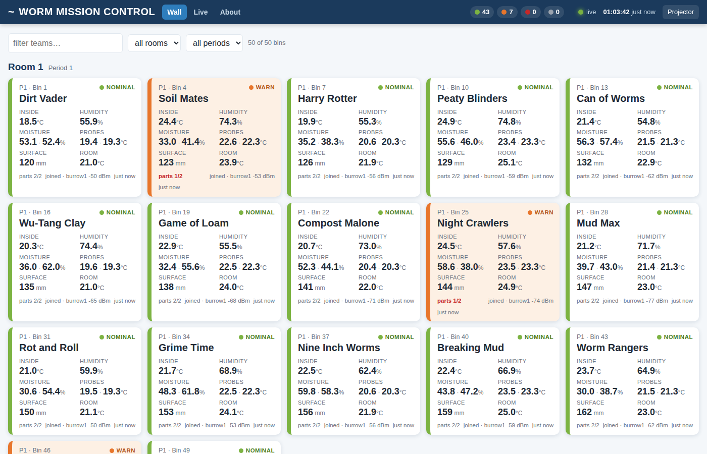
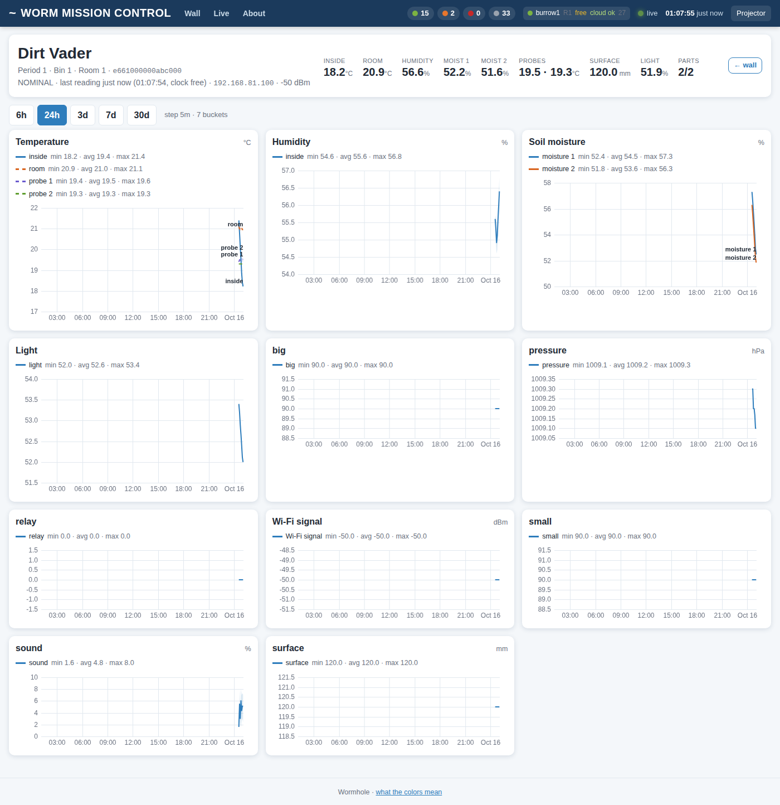
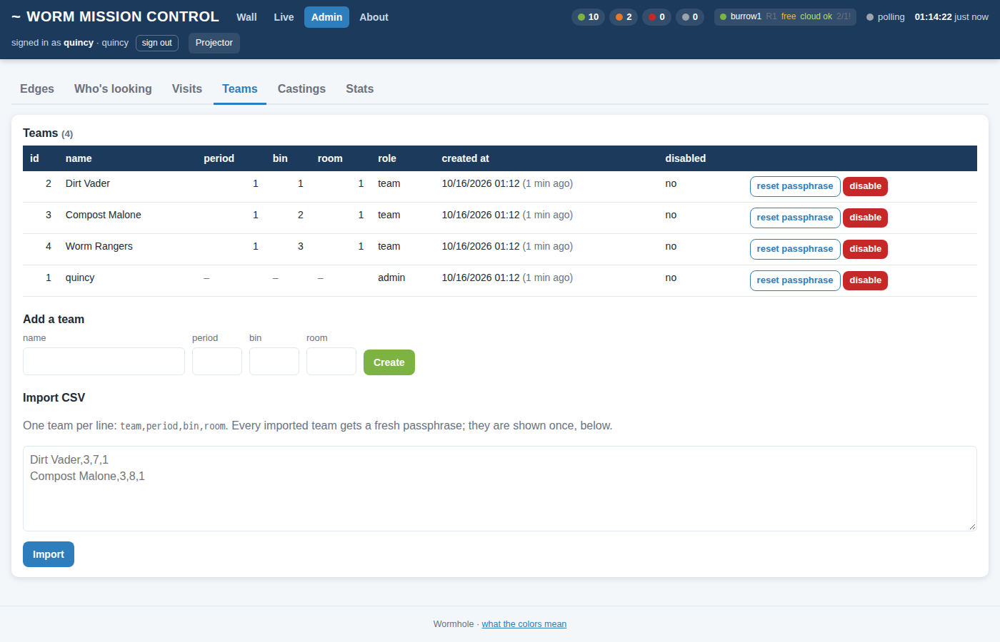

The same files (web/dash/: one HTML, one CSS, two JS, no build step, no external resources) are served by each classroom Burrow with no login and by the Surface behind the team login. A fourth, smaller page lives on every Pico. Nothing to install: the Pi setup script and the Worker deploy both pick the files up from the repo.
| Who | Where | Login | Works when |
|---|---|---|---|
| Projector, phones in the room | http://192.168.8N.10:8080/ (N = room) | none | always, no internet needed |
| Students at home, teachers anywhere | whs.makerlabkids.com | team + passphrase + first name; staff by name | shows the last state the cloud heard, live when the Portal has internet |
| Someone standing at a bin | the Bin's own page: its IP on WormHole, or http://192.168.4.1 on its hotspot | none | always, even with every router off |
/): instant statusOne tile per bin, grouped by room then period, sorted by bin number. Fifty tiles render in about a tenth of a second from a 15–40 KB JSON (/api/now), refreshed every 15 s and nudged instantly by the live stream. A filter box and room/period selectors; Projector mode (remembered per browser) hides the filters and enlarges everything for the back of the room. Click a tile for its history.
The header's Skins link opens /wall.html: the seven mission-control takes (Flight Deck, Living Bin, Leaderboard, WORM//NET, Daily Worm, Orbital, Worm Ranch) on this room's live bins. The same page on GitHub Pages shows the whole school through the website's anonymous /api/public/now feed, and falls back to simulated data, clearly labelled, when nothing is reporting.

| Status | Rule (any one is enough) |
|---|---|
| NOMINAL | none of the below |
| WARN | inside air above 27 °C or below 15 °C; any moisture below 25 %; a part reporting not-ok |
| ALARM | inside air above 30 °C or below 10 °C; any moisture below 15 % |
| STALE | no reading for 3 minutes (the bin has lost its Burrow, or power) |
The thresholds live at the top of web/dash/app.js (one small object) if the biology says otherwise. The header shows the counts, one badge per Burrow (room, clock quality ntp/peer/free, cloud ok, castings waiting), the live dot, and the last-update clock.
/bin/<uid>): the deep viewRange buttons 6 h / 24 h / 3 d / 7 d / 30 d. Up to three days of 5-minute buckets, hourly beyond that (the server picks; the page says which). One chart per metric family: temperature (air, room, each soil probe), air humidity, soil moisture, air pressure, light, and a small chart for anything else numeric the bin sends. Each line is the bucket average with a shaded min–max band; hover for values and time; min/avg/max for the range in the legend. Gaps stay gaps. All drawn on <canvas> by charts.js, about 300 lines.

Before the first casting seals (15 minutes after a bin's first report) the page says so instead of drawing an empty chart.
/feed): the streamA ticker of readings as they arrive (team, what changed, by how much) and a sparkline per bin of the last 60 values held in the tab. On a Burrow this is the room's /live server-sent events; on the Surface it is /live/1, /live/2, /live/3 through the three tunnels, each optional. A room whose tunnel is down shows as such and the page keeps polling /api/now instead; it retries the stream with backoff. (The route is /feed because on a Burrow /live is the stream.)
/login explains that the room is the credential, and the Admin link is not shown.
Unchanged from the worm-bin dashboard everyone already knows (readings, part chips, probes, servo sliders, relay, calibration), plus two things: the status line now reads Dirt Vader (P3 bin 7) live on WormHole · reporting to 192.168.81.10:8080 (or own hotspot, or no Burrow reachable), and a LAST 24 HOURS card draws sparklines from the board's RAM ring (/history, 288 five-minute samples): inside and room air, humidity, both moisture probes, soil probes, light, surface, Wi-Fi signal. It works on the hotspot with no network in the building. The Pico has no clock, so the axis is relative ("6 h") unless a Burrow has told it the time.
node --check app.js catches typos.web/dash, fake bins from simbins.py), or the whole chain with the real Worker: tools/e2e/run.sh starts a local Worker (wrangler, local D1/R2), a Burrow uploading to it, 12 fake bins, and drives the pages in a headless browser: 26 checks, admin flows included.npx wrangler deploy (assets go with the Worker); on each Burrow, the unlock → git pull → install.sh → lock dance from the Pi 5 page. The Burrow copy and the cloud copy may differ for a while; nothing breaks./api/me (local: true means a Burrow); everything else is the same code.